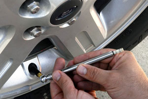
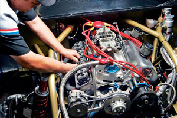
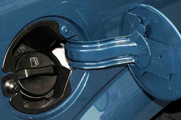
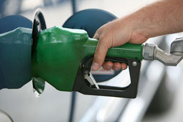

01 / CONDUCCIÓN
Acelera con suavidad
Evita acelerones y frenados innecesarios. Anticipar el tránsito suele hacer la conducción más eficiente.
Pequeños hábitos que ayudan a cuidar el motor, aprovechar el combustible y mantener tu auto en buenas condiciones.
Sigue siempre las indicaciones del fabricante de tu vehículo. Los resultados dependen del auto, el tránsito y las condiciones de manejo.
Evita acelerones y frenados innecesarios. Anticipar el tránsito suele hacer la conducción más eficiente.

Mantén la presión en frío indicada por el fabricante; una presión incorrecta afecta consumo, estabilidad y desgaste.

Da servicio a tiempo, utiliza el aceite recomendado y atiende las alertas de mantenimiento.

Después de cargar, verifica que la tapa de combustible quede bien cerrada y en buen estado.
En vías seguras y cuando sea apropiado, una velocidad constante reduce cambios bruscos de aceleración.

Agrupa mandados, evita desvíos innecesarios y retira peso que no necesitas transportar.